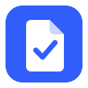

G-Work
교사의 학교 업무를 줄이는 Windows 프로그램
G-Work는 무엇을 하나요
- 공문(PDF·DOCX·XLSX·HWP·HWPX)을 넣으면 해야 할 일, 기한, 제출할 것을 정리합니다.
- 교직원 안내, 학부모 안내문, 이메일, 공문 기안, 보고서, 수합표 초안을 만듭니다.
- 오늘 할 일과 마감을 한 화면에 보여 주고, 지난해 비슷한 업무를 찾아 다시 활용합니다.
- 선택하면 Google Calendar를 연결해 오늘 일정을 함께 보고, 사용자가 고른 업무 기한을 캘린더에 추가합니다.
G-Work는 교사의 컴퓨터에 설치해 쓰는 프로그램입니다. 업무 기록은 그 컴퓨터 안에만 저장되며, G-Work 개발자는 별도 서버를 운영하지 않고 사용자의 데이터를 받지 않습니다.
Google Calendar 연결
- 연결은 사용자가 설정에서 [연결하기]를 누를 때만 시작하며, 처음에는 읽기 권한만 요청합니다.
- 캘린더에 쓰는 권한은 사용자가 처음으로 [Google Calendar에 추가]를 누를 때 따로 요청합니다.
- 읽은 일정은 화면에만 보여 주고 저장하지 않으며, 어디로도 보내지 않습니다.
자세한 내용은 개인정보처리방침을 확인해 주세요.
About G-Work (English)
G-Work is a Windows desktop application that helps school teachers in Korea handle administrative work. It reads official documents on the teacher's own computer, organizes the tasks, deadlines and required submissions, and drafts notices, e-mails and reports.
Optionally, a teacher can connect Google Calendar to see today's events next to their tasks and to add a task deadline they choose to their primary calendar. G-Work runs entirely on the user's computer; the developer operates no server and receives no user data. See the Privacy Policy.